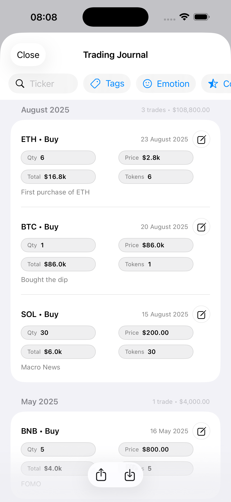

Tiered Exit Matrix
Set Tier 1/2/3 targets per asset and see distance to each with live pricing and projected profit.


ExitDeck is a crypto exit planner and portfolio tracker for serious investors. See live P&L per coin, set tiered sell targets, estimate tax, and build a DCA plan for the next bull run – all in one clean app.
Available on the App Store for iPhone & iPad
Set Tier 1/2/3 targets per asset and see distance to each with live pricing and projected profit.
Plan re-entry scenarios and bear-market accumulation, then save your plan back to holdings when ready.

Track allocations, log every trade with notes and emotions, and export your journal to CSV/PDF.
Most crypto trackers show you a balance. ExitDeck is built to answer a different question: “What happens if I sell here?” It combines live pricing with your targets, estimated tax impact, and re-entry plan so you know your next move before the market gets chaotic.
ExitDeck helps you plan exits, estimate tax, and map a DCA re-entry plan – so you know your next move before the market gets chaotic.
No. ExitDeck is a planning and tracking tool only. You keep your coins on your preferred exchanges or hardware wallets and mirror your positions in the app.
ExitDeck is for crypto investors who already hold coins and want a clear exit plan – not just “HODL and hope”. If you care about targets, tax impact and re-entry, it is built for you.
ExitDeck is currently available for iPhone and iPad via the Apple App Store.
ExitDeck never connects to your exchanges or wallets by default – you keep full control of where your coins live. The app is for planning, tracking, and exits only.